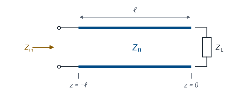
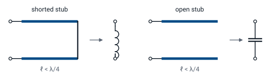

L7 - Terminated Transmission Lines#
Terminated Transmission Lines
Today we find the impedance a source sees through a length of line.
Lesson 7 · Module 1: Foundations · Maj Ellis · Dr. Neil Rogers
Learning Objectives
- I can use the transmission line equation to calculate the voltage/current at an arbitrary point on a specified transmission line.
- I can use the transmission line equation to match a load to a source using a length of transmission line.
Lesson 6 terminated a line in a load and found that the load sets the reflected wave. The incident and reflected waves add to a standing wave, so the ratio of total voltage to total current changes from point to point along the line. Today we compute that ratio at the source end: the input impedance of a line of length \(\ell\) terminated in \(Z_L\). The result is the transmission line equation, and it explains why a length of line can turn a short circuit into an inductor, an open circuit into a capacitor, or a \(100\ \Omega\) load into \(50\ \Omega\). We finish with the power that reaches the load, which justifies the \(\vert\Gamma\vert^2\) rule from Lesson 6.
Where We Were
Lesson 6: the load sets the reflected wave
Lesson 6 substituted \(V_0^- = \Gamma V_0^+\) into the wave solution on a lossless line, so one amplitude and the reflection coefficient describe the voltage everywhere. The current follows from Lesson 5: each wave’s current is its voltage divided by \(Z_0\), with a minus sign on the reflected wave because it travels in the \(-z\) direction. The load sits at \(z = 0\) and the source end of the line at \(z = -\ell\). Today we evaluate both at the source end.
Input Impedance

The source does not connect to the load; it connects to the line. What the source sees at its terminals is the ratio of the total voltage to the total current at \(z = -\ell\), which we call the input impedance \(Z_\text{in}\). If we replaced the line and the load with a single impedance equal to \(Z_\text{in}\), the source could not tell the difference: it would deliver the same current and the same power. That equivalence is what makes \(Z_\text{in}\) useful. It reduces any line and load to one impedance in the source’s circuit.
Evaluating at the Source End
We substitute \(z = -\ell\) into the voltage and current. Each \(e^{-j\beta z}\) becomes \(e^{+j\beta\ell}\), and each \(e^{+j\beta z}\) becomes \(e^{-j\beta\ell}\). The amplitude \(V_0^+\) appears in both the numerator and the denominator, so it cancels, and \(Z_0\) moves from the denominator’s denominator to the front. The input impedance does not depend on how hard the source drives the line, only on \(Z_0\), \(\Gamma\), and the electrical length \(\beta\ell\). This form is already useful, and Lesson 10 builds the Smith chart on it.
The Transmission Line Equation
To write the result in terms of the load, we substitute \(\Gamma = \frac{Z_L - Z_0}{Z_L + Z_0}\) and multiply the numerator and denominator by \(Z_L + Z_0\), which clears the fraction inside a fraction. Next we collect the terms that multiply \(Z_L\) and the terms that multiply \(Z_0\). In the numerator, \(Z_L\) multiplies \(e^{+j\beta\ell} + e^{-j\beta\ell} = 2\cos\beta\ell\) and \(Z_0\) multiplies \(e^{+j\beta\ell} - e^{-j\beta\ell} = 2j\sin\beta\ell\), by Euler’s identity; the denominator works the same way with the roles of \(Z_L\) and \(Z_0\) exchanged. Finally we divide every term by \(2\cos\beta\ell\). The result is the transmission line equation for a lossless line.
Worked Example: 150 Ω Through λ/8
A resistor seen through \(\lambda/8\) of line looks like a resistor in series with a capacitor.
Worked example — a resistive load through an eighth of a wavelength
A \(150\ \Omega\) load terminates a \(50\ \Omega\) line that is \(\lambda/8\) long. The electrical length is \(\beta\ell = \frac{2\pi}{\lambda}\cdot\frac{\lambda}{8} = \frac{\pi}{4}\), so \(\tan\beta\ell = 1\). Dividing the numerator and denominator by 50,
The load reflects with \(\Gamma = 0.5\), a VSWR of 3. Moving \(\lambda/8\) toward the source rotates the reflection coefficient by \(2\beta\ell = 90^\circ\) to \(0.5\angle -90^\circ\), and \(30 - j40\ \Omega\) is exactly the load that gave \(0.5\angle -90^\circ\) in the Lesson 6 practice set. The magnitude of the reflection coefficient, and so the VSWR, is the same everywhere on a lossless line; only the impedance changes.
Input Impedance Along the Line
The widget plots the input impedance of a \(50\ \Omega\) line, normalized to \(Z_0\), as the source end moves a distance \(d\) away from the load. The pattern repeats every \(\lambda/2\), so the plot covers half a wavelength. Start with the \(150\ \Omega\) load and move the cursor to \(\lambda/8\): the readout shows \(30 - j40\ \Omega\). Then try the short and open presets, and notice where the reactance passes through zero and where it runs off to infinity. The green dots mark where the input resistance equals \(Z_0\); Lesson 8 uses them.
Shorted and Open Lines
For a short circuit we set \(Z_L = 0\) directly. For an open circuit we cannot substitute infinity, so we first divide the numerator and denominator by \(Z_L\) and then let \(Z_L \to \infty\), which removes every term with \(Z_0/Z_L\). Both results are purely imaginary: a line terminated in a short or an open dissipates nothing, so it can only store energy, and its input impedance is a pure reactance. Which reactance depends on the length. A shorted line shorter than \(\lambda/4\) has positive reactance, like an inductor; an open line shorter than \(\lambda/4\) has negative reactance, like a capacitor.
Stubs as Reactances

Shorted \(\lambda/8\) stub of \(50\ \Omega\) line: \(Z_\text{in} = j50\ \Omega\).
At 1 GHz in RG-58: 2.5 cm long, the same as \(7.96\) nH.
A short length of line with a short or an open at its end is called a stub, and at microwave frequencies stubs replace inductors and capacitors, which are hard to build with accurate values above a few gigahertz. A shorted stub \(\lambda/8\) long has \(\tan\beta\ell = 1\), so \(Z_\text{in} = j50\ \Omega\) on a \(50\ \Omega\) line. In RG-58 at 1 GHz, \(\lambda = v_p/f = 20\) cm, so the stub is 2.5 cm long, and it presents the same reactance as an inductor with \(L = \frac{50}{2\pi \times 10^9} = 7.96\) nH. The stub’s reactance changes with frequency differently than an inductor’s, so the equivalence holds at one frequency. Lesson 9 uses stubs to build matching networks.
Matched and Half-Wave Lines
A matched line has no reflected wave, so the ratio of voltage to current is \(Z_0\) everywhere, and the input impedance is \(Z_0\) at any length. A half-wave line, \(\ell = \lambda/2\), has \(\beta\ell = \pi\) and \(\tan\beta\ell = 0\), so the input impedance equals the load impedance, whatever the load. The same holds for any whole number of half wavelengths. A half-wave line is transparent: it moves the load to a new location without changing what the source sees, at the frequency where it is exactly \(\lambda/2\) long.
The Quarter-Wave Line
At \(\ell = \lambda/4\), \(\beta\ell = \pi/2\) and \(\tan\beta\ell\) is infinite, so we divide the numerator and denominator by \(\tan\beta\ell\) before taking the limit. The terms divided by \(\tan\beta\ell\) vanish, and what remains is \(Z_0^2/Z_L\). A quarter-wave line inverts the load impedance about \(Z_0\): a short becomes an open, an open becomes a short, and a \(25\ \Omega\) load on a \(50\ \Omega\) line looks like \(50^2/25 = 100\ \Omega\).
The Quarter-Wave Transformer
Choose the section’s impedance \(Z_1\) so a real load \(R_L\) looks like \(Z_0\):
\(R_L = 100\ \Omega\) to \(50\ \Omega\): \(Z_1 = 70.7\ \Omega\).
The inversion gives a simple way to match a resistive load. We insert a quarter-wave section of a different line, with characteristic impedance \(Z_1\), between the main line and the load. Seen through the section, the load becomes \(Z_1^2/R_L\), and setting that equal to \(Z_0\) gives \(Z_1 = \sqrt{Z_0 R_L}\), the geometric mean of the two impedances. To match a \(100\ \Omega\) load to a \(50\ \Omega\) line, the section needs \(Z_1 = \sqrt{50 \times 100} = 70.7\ \Omega\). The match is exact only at the frequency where the section is \(\lambda/4\) long, and it works only for a real load; Lessons 8 and 9 handle complex loads.
Power Delivered to the Load
The time-average power carried past any point is one half the real part of the voltage phasor times the conjugate of the current phasor, the same rule as in circuit analysis. We substitute both phasors; conjugating the current flips the sign of every exponent and conjugates \(\Gamma\). Multiplying out gives four terms. Two of them are \(1\) and \(-\vert\Gamma\vert^2\), both real. The other two are a number and minus its own conjugate, which is purely imaginary, so the real part removes them. What remains does not depend on \(z\).
The Power Result
The same power passes every point on a lossless line, and all of it reaches the load.
The first factor is the power the incident wave carries by itself, and the reflected wave carries \(\vert\Gamma\vert^2\) of it back toward the source. The net power is the same at every point, which is what conservation of energy requires on a lossless line: none is lost along the way, so whatever passes the source end must arrive at the load. This is the derivation behind the rule Lesson 6 used, that a load absorbs \(1 - \vert\Gamma\vert^2\) of the incident power.
Summary
Symbol / idea |
What it is |
Number to remember |
|---|---|---|
\(Z_\text{in}\) |
Total voltage over total current at the source end |
\(Z_0\frac{Z_L + jZ_0\tan\beta\ell}{Z_0 + jZ_L\tan\beta\ell}\) |
Shorted line |
Pure reactance, inductive below \(\lambda/4\) |
\(jZ_0\tan\beta\ell\) |
Open line |
Pure reactance, capacitive below \(\lambda/4\) |
\(-jZ_0\cot\beta\ell\) |
Half-wave line |
Transparent |
\(Z_\text{in} = Z_L\) |
Quarter-wave line |
Inverts the load about \(Z_0\) |
\(Z_\text{in} = \frac{Z_0^2}{Z_L}\) |
Quarter-wave transformer |
Matches a real load |
\(Z_1 = \sqrt{Z_0 R_L}\); \(100\ \Omega\) to \(50\ \Omega\): \(70.7\ \Omega\) |
Power delivered |
Net power, the same at every point |
\(\frac{\vert V_0^+\vert^2}{2Z_0}\left(1 - \vert\Gamma\vert^2\right)\) |
Practice
Where This Is Going
Lesson 8: choose a length of line that makes the input resistance \(Z_0\), then cancel the reactance that is left.
Lesson 9: the same idea in admittance, with a stub.
The quarter-wave transformer matches a real load, but most loads are complex. The widget showed that along any mismatched line there are points where the input resistance equals \(Z_0\) exactly, and only a reactance is left over. Lesson 8 finds those points from the magnitude and phase of \(\Gamma\), then cancels the leftover reactance with a capacitor or inductor in series. Lesson 9 does the same with admittances and a component in parallel, then replaces the component with one of today’s stubs.
Before Lesson 8, read sections 3.21 through 3.23 of Ellingson, Electromagnetics, Vol. 1.